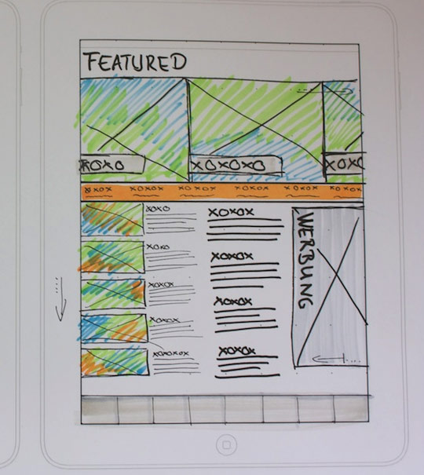
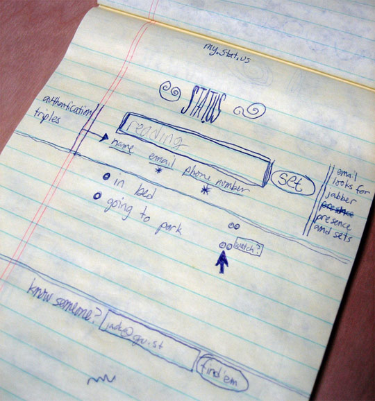

Now you have two web pages. They are not much to look at although you can navigate from one page to another.To build a good quality web site, you need to think about a few things carefully
What do you want to be on your web site?
What do you want to be on your homepage?
What is your target audience?
Are layouts and choice of colours and fonts appropriate for the contents and target audience?
It is a common practice for web designers to sketch some layouts of web pages, then web developers use those designs to write html code.
The following image showing an example of such sketch of layout.

This is the original Twitter concept sketch!
